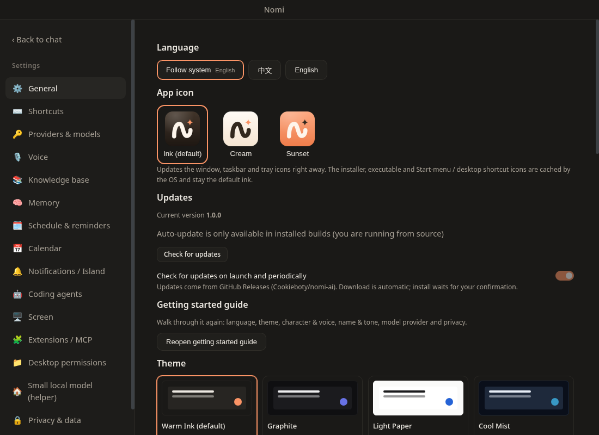

Personalization
Themes, app icons, sidebar, shortcuts, language, accessibility
This page has not been translated yet, so it is shown in Chinese.
主题与应用图标在「设置 → 通用 → 通用 → 外观」。
主题
可选：浅色（新用户默认）、深色、日落橙、暖墨、石墨、奶油、冷雾、跟随系统（系统深色用深色，浅色用浅色），以及图片主题。对话窗口、设置、引导和标题栏一起切换，已经选过主题的用户保持原来的选择。
图片主题
选「图片主题」后，主题色卡下出现图片选择、「毛玻璃」和「蒙版不透明度」：
- 清晰底图按窗口尺寸铺满，对话、侧栏、右侧面板、设置和弹窗共用同一背景；「毛玻璃」调节上方全局蒙版的背景采样模糊，不放大或直接模糊原图，文字与控件保持清晰。
- 「蒙版不透明度」只调节蒙版，不改变图片本身：数值越大蒙版越实、图片越不明显；毛玻璃为
0px时不做模糊。主题色卡同步预览蒙版效果。 - 默认用内置的预设图片（
apps/desktop-go/assets/backgrounds/nomi-preset.jpg），可以换成自己的图片。所选图片会缓存，原文件移动或删除后重启也能恢复；换图不会重置毛玻璃和透明度。 - 默认毛玻璃为
0px、蒙版不透明度为50%；「恢复默认」恢复预设图片与这组参数，不会退出图片主题。 - 图片主题使用石墨配色；委派卡片、任务与素材库面板同样使用透明表面。
我的主题（自定义主题与主题包）
可以自己配色，也可以导入别人分享的主题包。「主题」标题右侧依次是「跟随系统」开关、「新建主题」和「导入主题包」；自己的主题和内置主题在同一个色卡网格里，自己的排在最前（名字前有调色板图标）。
- 「跟随系统」打开时在浅色与深色之间跟着系统切换；点任意一张色卡或关掉开关就固定下来（关掉时停在当前看到的那套）。
- 「导入主题包」打开一个弹窗：把主题包拖进去，或点一下用系统选择框选文件；取消选择什么也不发生。拖入的文件不超过 12 MB，更大的请点选。弹窗里的「下载模板」保存一份带浅色、深色两套的模板（
nomi-theme-template.nomitheme.json），改完直接导入。 - 「新建主题」在右侧抽屉里打开，以当前主题的颜色为起点，填 4 个颜色：强调色、背景、表面（卡片、面板）、文字。也可以在「粘贴一组颜色」里一次贴入多个
#rrggbb，按这个顺序填入。 - 其余颜色（悬停、选中、边框、次要文字、按钮按下等）自动推导。只有一套时，背景偏深按深色主题处理，窗口外观和提示色（成功、警告、错误）跟着深色走；偏浅按浅色处理。
- 打开「浅色、深色各一套」后，浅色版、深色版分别配色，主题跟随系统外观在两套之间切换；另一套从默认的浅色 / 深色起步，沿用你的强调色。
- 「进阶：逐个调整颜色」按分组列出可以覆盖的颜色，留空就用推导值；支持
#rrggbb、rgb()、hsl()、oklch()。 - 「背景图」可以给主题加一张图（PNG、JPEG、WebP，不超过 15 MB；PNG、JPEG 长边超过 2560 像素会缩小），和图片主题一样调「毛玻璃」与「蒙版不透明度」，界面面板随之半透明。
- 编辑时整个窗口实时预览正在编辑的那一套（含背景图），取消即还原；保存后切换到这个主题，所有窗口（含桌面角色的气泡）同步。
- 对比度检查列出正文、次要文字、按钮文字和链接的对比度，低于 4.5:1 会标出来。按钮文字和链接看不清时会自动微调强调色；强调色本身在背景上不足 3:1 时也会调到刚好达标，用在开关、强调线等不放文字的地方。正文颜色不自动改。
- 选中一个自定义主题后，色卡下方出现它的「编辑」「导出主题包」「删除」（编辑同样在抽屉里）。删除正在使用的主题会换回默认主题。最多保存 100 个。
主题包没有背景图时是一个 JSON 文件（.nomitheme.json），有背景图时是一个 zip（.nomitheme，里面是 theme.json 和 background.png / .jpg / .webp）。theme.json：
{
"format": 2,
"name": { "zh": "深海", "en": "Deep Sea" },
"author": "someone",
"base": "dark",
"seeds": { "accent": "#4fa3d9", "background": "#0f1a22", "surface": "#172632", "text": "#e6f0f5" },
"tokens": { "--cd-color-success": "#3fb47a" },
"variants": {
"light": { "seeds": { "accent": "#2f7fb8", "background": "#f4f7f9" } }
},
"background": { "image": "background.jpg", "blur": 0, "opacity": 0.5 }
}name可以是字符串，也可以按语言写zh/en；base为light或dark。seeds可以只写其中几个，没写的取基底主题的颜色；取值为#rgb或#rrggbb。tokens可选，直接覆盖推导结果，只接受packages/ui/src/themeTokens.ts列出的颜色令牌；取值只能是 hex、rgb()、rgba()、hsl()、hsla()、oklch()。variants可选，只能放与base相反的那一套（seeds/tokens同上）；有它主题就跟随系统。background只在 zip 里有效，image是包内图片的文件名；blur为 0–40，opacity为 0.05–1。format：只用到name/base/seeds/tokens时导出为1，用到variants或background时为2；更早的版本不认2，会拒绝导入。theme.json不超过 64 KB，图片不超过 15 MB。格式不对、出现未列出的令牌或其他写法（如url(...)、var(...)）、zip 里有别的文件时整个包拒绝导入。
应用图标
「外观」里的「应用图标」：日落橙（默认）、奶油、墨色。窗口、任务栏 / Dock 和托盘图标即时更新；安装包、可执行文件和 Finder / 开始菜单里的静态图标保持默认的墨色。macOS 菜单栏托盘始终是单色模板图标。图标素材见 品牌规范。
侧栏
- 侧栏左边是固定的导航栏：最上面是「对话」「任务」「素材库」（第一个图标与会话面板顶行对齐；收起 / 展开会话面板用标题栏左侧的按钮）；工坊模式下，分隔线下面竖排全部端点（「全部」、Nomi 与各编程助手），点一下只看这个端点的会话；最底部是知识 / 扩展入口，设置在最下面。端点默认「自动」：本机装了或有对话就显示（在 Nomi 里装完、或在终端里装完回到窗口就出现）；「侧栏显示的端点」里可以改成一直显示或隐藏，拖动调整顺序。
- 会话面板顶部的「对话 ⌄」/「工坊 ⌄」切换两种模式：对话用来聊天、查知识库、看记忆；工坊用来派出 Claude Code、Codex 等编程助手，改项目、看 Diff。右边的放大镜（或
Ctrl/⌘+Shift+F）打开搜索窗：没输入时是「新对话」和最近对话，输入后搜索对话与本机历史；底部标签可以切到「对话」「任务」「素材库」，点任务 / 素材直接打开对应页面。 - 「项目」标题右侧是「…」（整理侧栏：按项目分组 / 合并显示）、「+」（新建项目：打开「创建项目」，建好后直接在这个项目里开一个会话）和笔形的「新对话」（不放进任何项目，出现在「其他对话」里；要在某个项目里开会话用项目行上的「新建」）；「其他对话」只在有不属于任何项目的会话时显示，标题上没有新建；不分组时「对话」标题右侧是「…」和「新建对话」；「本机历史」标题右侧是刷新。
- 窗口整体是 Codex 式三层：导航栏和标题栏在窗口底色上；会话面板（浅灰）和对话区（白色，含中栏、右栏、任务与素材库）拼成一张圆角卡片，中间一条细线分开；收起会话面板后对话区自己是一张完整的圆角卡片。标题栏左侧的侧栏按钮图标随收起 / 展开变化；卡片上方显示当前会话名与项目（悬停看项目的全部文件夹；新会话不显示），右侧是会话菜单「…」（重命名、分叉、归档、关闭标签、永久删除）和改动 · 文件栏开关。
- 会话只在侧栏里切换，当前会话用浅色圆角底高亮；行首不画端点图标，标题都左对齐；工坊模式的「全部」里，编程助手的会话在行尾有一个灰色小图标标出端点（Nomi 是默认，不标），切到某个端后不再标；悬停卡片里有完整的端点名，Nomi 委派出去的会话写明「由 Nomi 委派给 X」；编程助手会话的标题取用户的第一句提问（Nomi 发给编程助手时附带的沙箱说明不会当成标题，以前误用的标题启动时会修正）；行上不显示时间，正在跑或排队的会话只在行首显示状态点（读屏会读出「进行中」/「排队中」），不再在行尾重复写字。悬停或键盘聚焦一行时右侧弹出小卡片：标题、端点、多久前、状态与项目；点卡片里的标题可以直接改名（Enter 保存、Esc 取消）。行尾是「置顶」「归档」和「更多」：置顶的会话放在最上面的「置顶」里。项目与「其他对话」默认显示 5 / 20 条，下面一行小字「再显示 N 条」每点一次多显示 5 条，全部显示后变成「收起」。分区标题是小号灰字，项目名比会话标题重一档，当前会话用浅色圆角底、标题加粗一档。
Ctrl/⌘+B或标题栏旁的按钮收起 / 展开会话面板。收起后只剩导航栏；鼠标移到「对话」或端点图标上，会话面板以浮层弹出，可以直接选，移开或按Esc收起。- 行尾的归档按钮把 Nomi 对话归档：不再在侧栏显示，可以在「设置 → Nomi → 已归档的对话」里取消归档或永久删除。「更多」菜单里还有「永久删除」，删除前会再确认一次、不能恢复。编程助手标签的行内按钮是「关闭标签」。
- 会话按项目分组。项目是有名字的一组文件夹（跨端的工程可以把前端、后端、文档几个目录放进同一个项目），其中一个是主文件夹：会话的工作目录、git 与分支、AGENTS.md 都以它为准，其余文件夹 Nomi 与编程助手同样能读写。「创建项目」里填名称（不填用主文件夹的目录名）、添加文件夹（「在此电脑上添加文件夹 ⌄」里是最近用过的目录，或选择文件夹）；第一个加进来的是主文件夹，其余文件夹上的星标可以改成主文件夹。悬停项目时右侧是「…」（编辑项目：改名、增删文件夹、换主文件夹、移除项目）和「新建」（在该项目里开新会话：工坊「全部」视图沿用该项目最近一个会话的端点，「按端」跟随筛选的端点）。改了项目的文件夹，已有会话下一轮起就按新的文件夹工作（编程助手空闲的会话重启接着用原会话；工作目录已经不在项目里的换到新的主文件夹，开新会话并带上前文）。编程助手的会话工作目录落在某个已有项目里（几个项目都包含时取最具体的）就自动归进那个项目：新建、从本机历史打开、Nomi 委派开的 worktree 标签都算，启动时与新建 / 修改项目时也会把以前的会话补上；在输入框上方选了「不使用项目」的不再自动归回。移除项目只是不再显示它，磁盘上的文件不动，项目里的会话移到「其他对话」。
- 项目按最近活动排序，没有会话的项目也显示（工坊「按端」看某个端时，只列这个端有会话的项目；折叠的项目上的数字是当前显示的会话数，0 不显示）；每个项目默认显示最近 5 条，其余点「再显示 N 条」；点项目名折叠 / 展开（会记住）。没有项目的会话列在「其他对话」里；「项目」「其他对话」「本机历史」的分区标题（灰色小字加「>」）点一下可以收起整个分区，「项目」「其他对话」会记住；「…」里的「合并显示」关闭分组，回到平铺列表。
- 2.3.8 起按项目组织：第一次启动时，以前用过的每个工作目录（Nomi 对话的工作区、编程助手标签的目录）各建成一个只有这个文件夹的项目，会话照旧归在里面。
快捷键
「设置 → 通用 → 快捷键」列出全部快捷键：点「修改」后按下新的组合键（需要包含 Ctrl/⌘ 或 Alt，或使用 F1–F12），冲突时会提示；Esc 取消。
| 默认 | 作用 |
|---|---|
Ctrl/⌘+K | 命令面板 |
Ctrl/⌘+N | 新对话 |
Ctrl/⌘+Shift+F | 搜索对话 |
Ctrl/⌘+L | 聚焦输入框 |
Ctrl/⌘+, | 打开设置 |
Ctrl/⌘+B | 收起 / 展开侧栏 |
Ctrl/⌘+Shift+K | 知识库问答开关 |
Ctrl/⌘+Shift+H | 免按键对话开关 |
Ctrl/⌘+Shift+M | 知识 · 记忆 · 日程抽屉 |
Ctrl/⌘+Shift+E | 扩展 / MCP |
Ctrl/⌘+Shift+J | 本机模型（设置 → 模型与供应商 → 本机模型） |
Ctrl/⌘+T | 新建编程助手标签 |
Ctrl/⌘+Shift+W | 关闭标签 |
Ctrl+Tab | 下一个标签 |
Ctrl+Shift+Tab | 上一个标签 |
Ctrl/⌘+Shift+R | 重命名标签 |
Ctrl/⌘+Shift+C | 在终端打开当前会话的工作目录（编程助手标签的目录或 Nomi 对话项目的主文件夹；目录按项目文件夹的规则再校验） |
固定快捷键（不能改）：输入框里 / 打开命令；Enter 发送、Shift+Enter 换行；输入框为空时 ↑ 找回上一条提问；按住 F2 说话；Ctrl/⌘+Shift+F 把当前对话分叉为新对话；Ctrl/⌘+1…9 切换到第 n 个标签（9 = 最后一个）；Esc 关闭弹窗或菜单。
语言
「设置 → 通用 → 通用 → 启动与窗口」里的语言：中文、English 或跟随系统。

无障碍
- 所有功能都可以用键盘完成；图标按钮都有可读的名称。
- 弹窗会锁定焦点，
Esc只关闭最上层，关闭后焦点回到打开它的位置。 - 开启系统的「减少动态效果」后，诺米的动作、灵动岛与界面动画都会收敛。
实现
- 主题：
packages/ui/src/theme.ts，自定义主题的推导在packages/ui/src/customTheme.ts，存储与主题包校验在apps/desktop-go/internal/core/theme；快捷键：packages/ai-chat/src/services/shortcuts.ts；设置页：packages/ai-chat/src/components/SettingsView。 - 应用图标切换：
apps/desktop-go/internal/core/appicon。